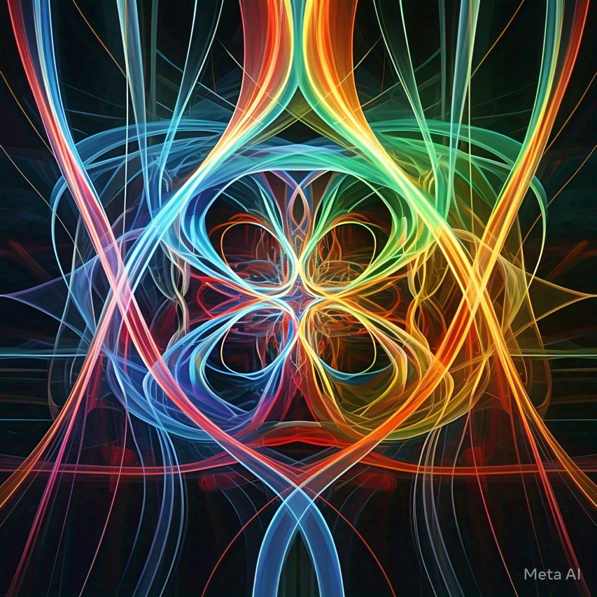
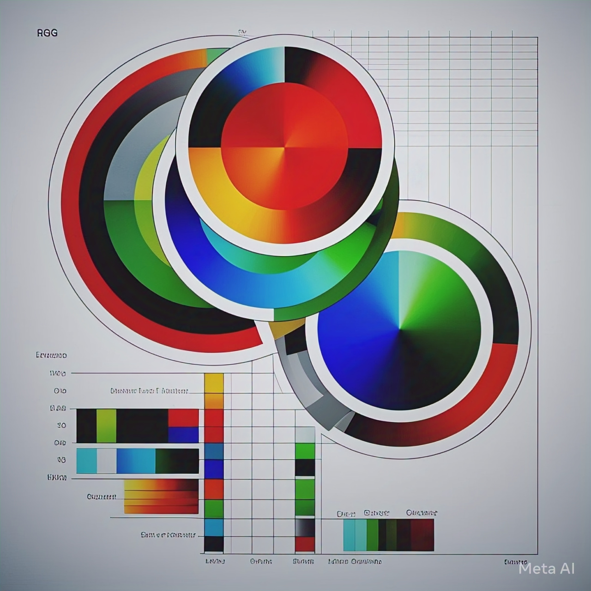
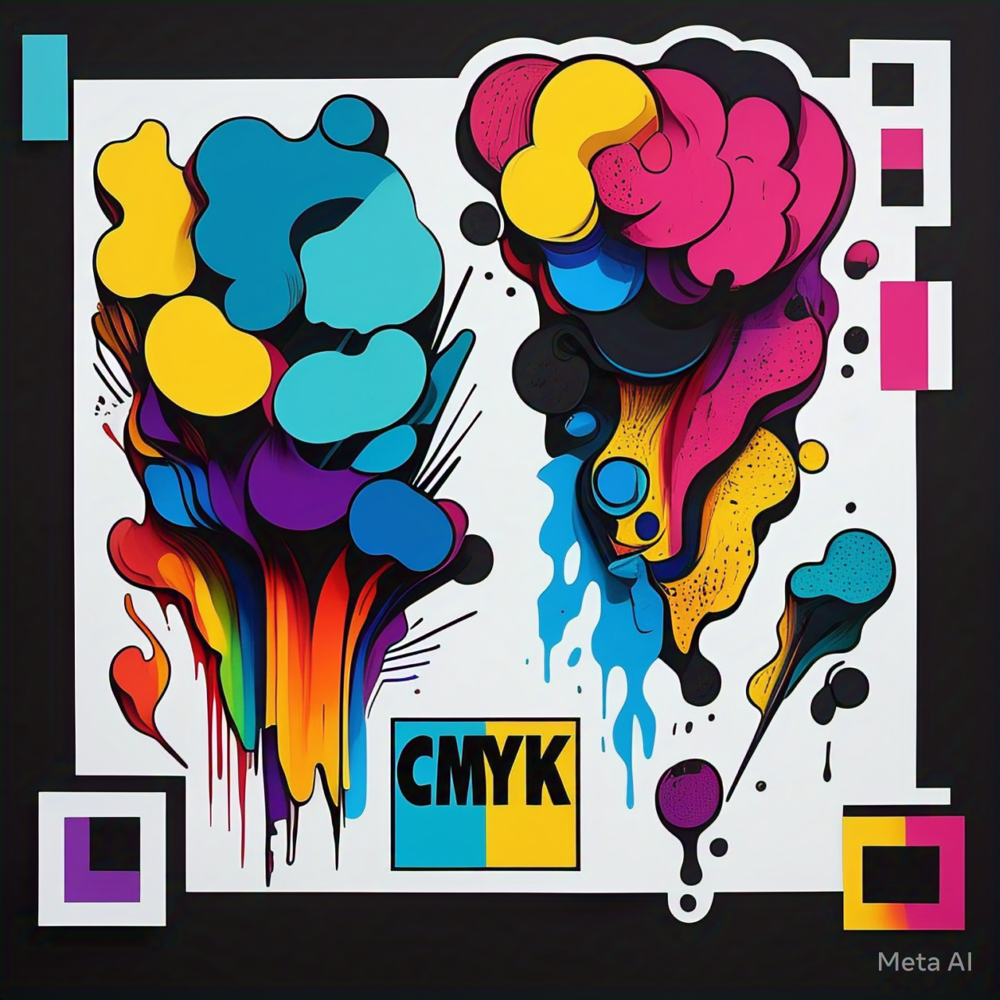
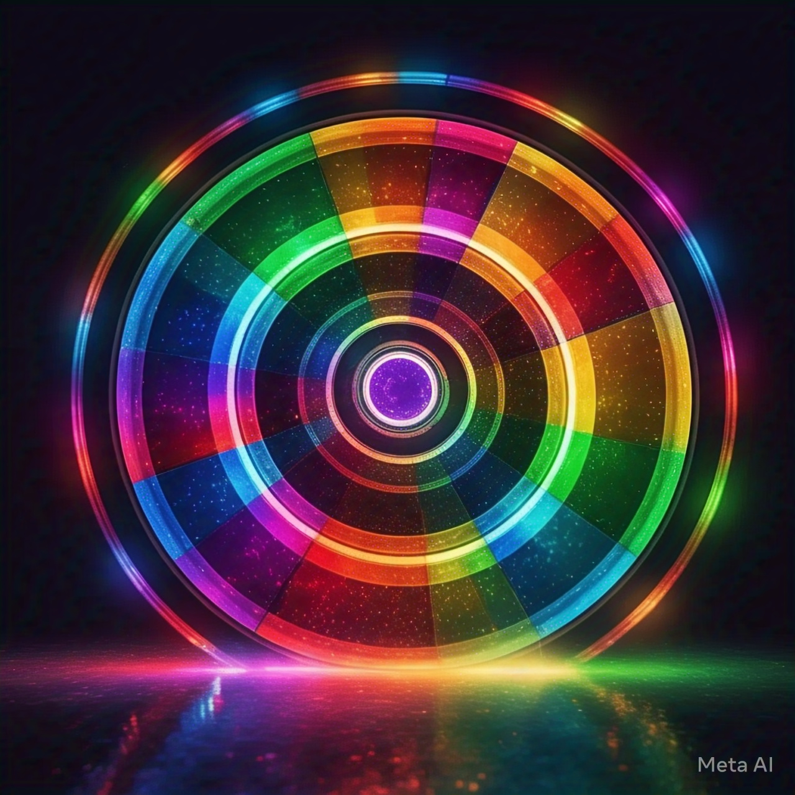

La Teoría del Color
La teoría del color es una rama de la física y la psicología que se ocupa del estudio de la percepción y la interpretación de los colores. En este artículo, exploraremos los fundamentos de la teoría del color, sus principios básicos y cómo se aplica en diferentes campos.
La Naturaleza de la Luz y el Color
La luz es una forma de energía electromagnética que se propaga a través del espacio. Cuando la luz incide en un objeto, se refleja, se absorbe o se transmite. La cantidad y la calidad de la luz reflejada determinan el color que percibimos.
El Modelo de Color RGB
El modelo de color RGB (Rojo, Verde y Azul) es un sistema de color aditivo que se utiliza en la mayoría de los dispositivos electrónicos. En este modelo, se combinan diferentes intensidades de luz roja, verde y azul para crear una amplia gama de colores.
El Modelo de Color CMYK
El modelo de color CMYK (Cian, Magenta, Amarillo y Negro) es un sistema de color sustractivo que se utiliza en la impresión. En este modelo, se combinan diferentes cantidades de tinta cian, magenta, amarillo y negro para crear una amplia gama de colores.
La Rueda de Color
La rueda de color es una herramienta fundamental en la teoría del color. Se trata de un círculo que muestra la relación entre los diferentes colores. La rueda de color se divide en diferentes secciones, cada una de las cuales representa un color primario (rojo, azul y amarillo) o secundario (naranja, verde y violeta).
La Harmonía de Color
La harmonía de color se refiere a la forma en que los colores se combinan para crear un efecto visual agradable. Hay diferentes principios de harmonía de color, como la armonía de colores complementarios, la armonía de colores análogos y la armonía de colores triádicos.
Aplicaciones de la Teoría del Color
La teoría del color tiene una amplia gama de aplicaciones en diferentes campos, como:
- Arte y diseño
- Publicidad y marketing
- Moda y textiles
- Arquitectura e interiorismo
- Ciencia y tecnología
En conclusión, la teoría del color es una disciplina compleja y fascinante que se ocupa del estudio de la percepción y la interpretación de los colores. Su comprensión es fundamental en una amplia gama de campos, desde el arte y el diseño hasta la ciencia y la tecnología.